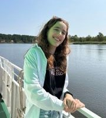

CV

- Name:
- Contact Information:
- gmail: dasharylko2002@gmail.com
- telegram: https://t.me/dasharylko
- discord: Darya Rylko (@DashaRylko)
- Self-Introduction:
- I am from Minsk and I'm student in my last year of studying at Chemistry Facultry of BSU. My personal interests include learning biostatistics and programming. My goal of learning programming was to deeper understanding and optimization of my statistical calculations. Now I have a desire to learn new skills of creating web-sites.
- Skills:
- Python - intermediate;
- Java - basic;
- JavaScript - basic;
- Work Experience:
- I've been working in a lab conducting bioequivalence studies since July 2021
- Education:
- Chemistry Facultry of BSU
- English Languag:
- B2 - upper intermediate, practice - reading books and watching content in english